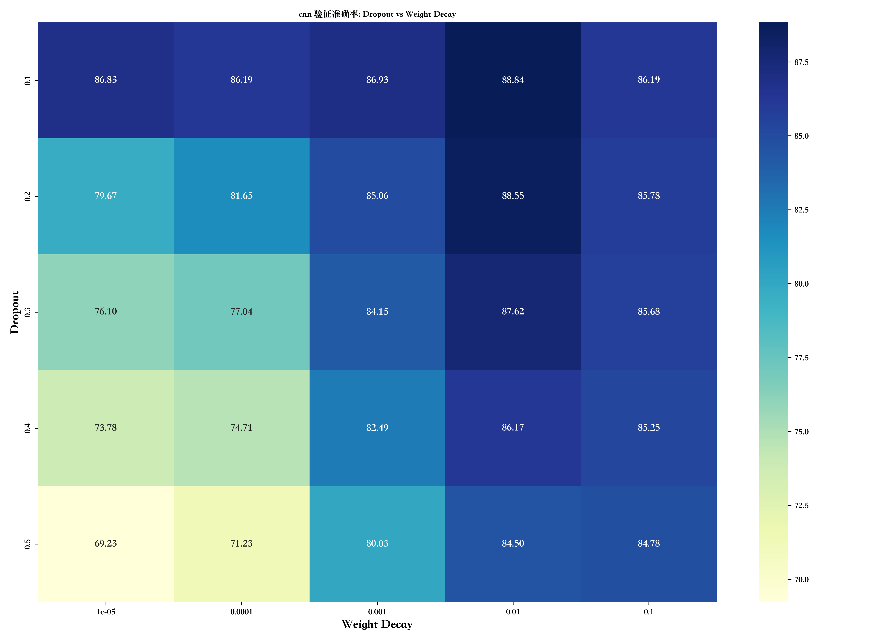
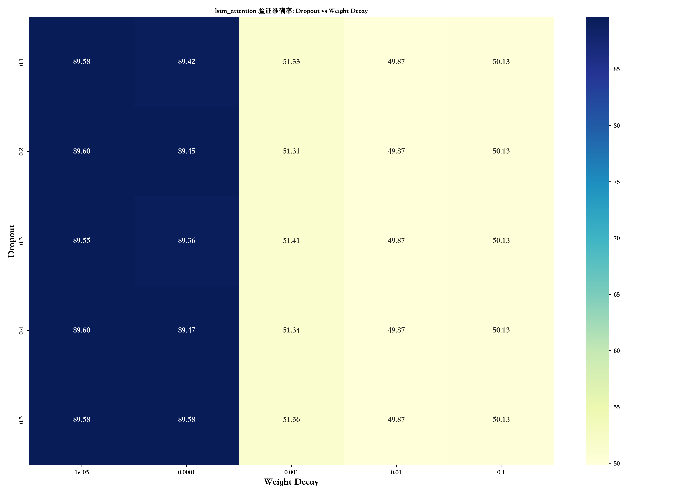
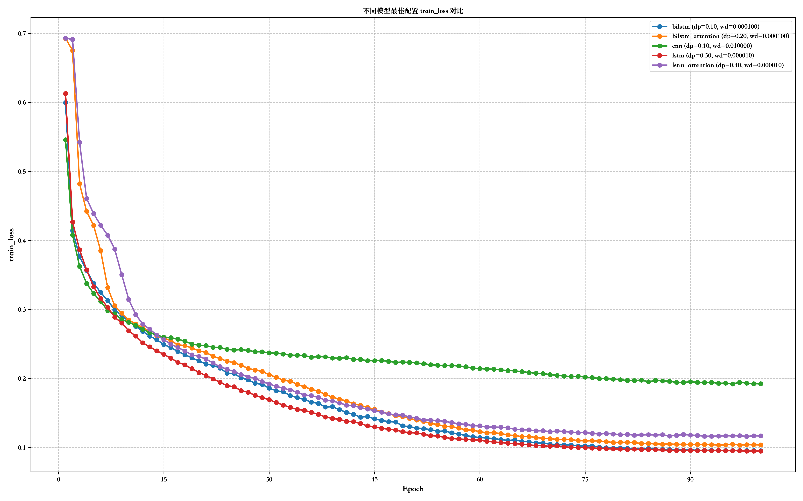
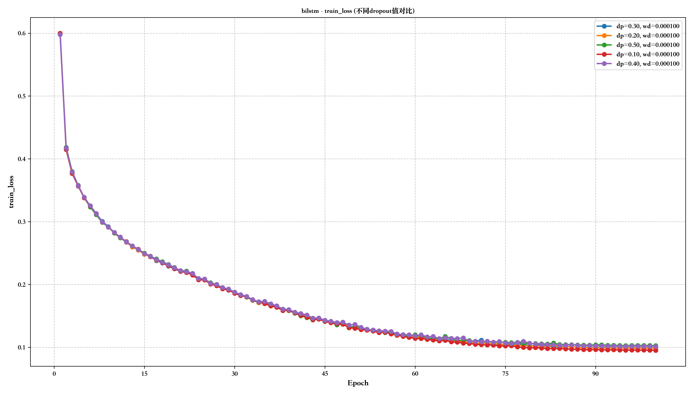
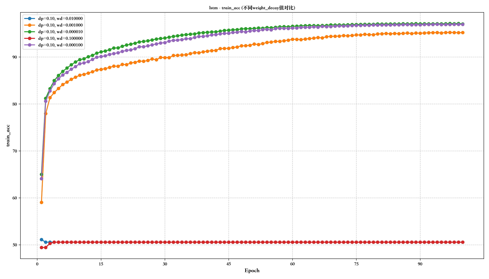

模型训练性能对比分析报告 - Dropout和Weight Decay参数研究
最佳性能模型
整体最佳模型: lstm (验证准确率: 90.07%)
最佳参数配置: dropout=0.30, weight_decay=0.000010
最佳epoch: 35
各模型最佳配置
| 模型 |
Dropout |
Weight Decay |
验证准确率 |
训练准确率 |
F1分数 |
召回率 |
最佳Epoch |
| bilstm |
0.1 |
0.000100 |
89.90% |
93.14% |
93.14% |
93.14% |
28 |
| bilstm_attention |
0.2 |
0.000100 |
89.44% |
91.12% |
91.12% |
91.12% |
22 |
| cnn |
0.1 |
0.010000 |
88.84% |
93.19% |
93.19% |
93.19% |
99 |
| lstm |
0.3 |
0.000010 |
90.07% |
94.56% |
94.56% |
94.56% |
35 |
| lstm_attention |
0.4 |
0.000010 |
89.60% |
91.92% |
91.92% |
91.92% |
24 |
不同Dropout和Weight Decay下的性能比较
bilstm_attention Dropout vs Weight Decay 热力图

cnn Dropout vs Weight Decay 热力图

lstm_attention Dropout vs Weight Decay 热力图

lstm Dropout vs Weight Decay 热力图
bilstm Dropout vs Weight Decay 热力图

模型性能指标对比
按Dropout分组的模型性能比较
按Weight Decay分组的模型性能比较
各模型最佳配置的指标对比
val_acc 最佳配置对比
train_acc 最佳配置对比
val_loss 最佳配置对比
train_loss 最佳配置对比

f1 最佳配置对比
recall 最佳配置对比
各模型不同Dropout值的性能比较
bilstm 模型不同Dropout值的性能比较
val_acc (不同dropout值)
train_acc (不同dropout值)
val_loss (不同dropout值)
train_loss (不同dropout值)

bilstm_attention 模型不同Dropout值的性能比较
val_acc (不同dropout值)
train_acc (不同dropout值)
val_loss (不同dropout值)
train_loss (不同dropout值)
cnn 模型不同Dropout值的性能比较
val_acc (不同dropout值)
train_acc (不同dropout值)
val_loss (不同dropout值)
train_loss (不同dropout值)
lstm 模型不同Dropout值的性能比较
val_acc (不同dropout值)
train_acc (不同dropout值)
val_loss (不同dropout值)
train_loss (不同dropout值)
lstm_attention 模型不同Dropout值的性能比较
val_acc (不同dropout值)
train_acc (不同dropout值)
val_loss (不同dropout值)
train_loss (不同dropout值)
各模型不同Weight Decay值的性能比较
bilstm 模型不同Weight Decay值的性能比较
val_acc (不同weight_decay值)
train_acc (不同weight_decay值)
val_loss (不同weight_decay值)
train_loss (不同weight_decay值)
bilstm_attention 模型不同Weight Decay值的性能比较
val_acc (不同weight_decay值)
train_acc (不同weight_decay值)
val_loss (不同weight_decay值)
train_loss (不同weight_decay值)

cnn 模型不同Weight Decay值的性能比较
val_acc (不同weight_decay值)
train_acc (不同weight_decay值)
val_loss (不同weight_decay值)
train_loss (不同weight_decay值)
lstm 模型不同Weight Decay值的性能比较
val_acc (不同weight_decay值)
train_acc (不同weight_decay值)

val_loss (不同weight_decay值)
train_loss (不同weight_decay值)
lstm_attention 模型不同Weight Decay值的性能比较
val_acc (不同weight_decay值)
train_acc (不同weight_decay值)
val_loss (不同weight_decay值)
train_loss (不同weight_decay值)

结论与建议
根据对不同模型、不同dropout和weight_decay参数配置的性能分析，我们得出以下结论：
- 整体性能最佳的模型是 lstm，验证准确率达到 90.07%
- 该模型的最佳参数配置是：dropout=0.30, weight_decay=0.000010
- 各模型的最佳参数配置：
- bilstm: dropout=0.10, weight_decay=0.000100
- bilstm_attention: dropout=0.20, weight_decay=0.000100
- cnn: dropout=0.10, weight_decay=0.010000
- lstm: dropout=0.30, weight_decay=0.000010
- lstm_attention: dropout=0.40, weight_decay=0.000010
- 通过热力图可以观察到，dropout和weight_decay的不同组合对模型性能有显著影响
- 较小的weight_decay值（如1e-5）通常能够获得更好的验证准确率
- 过高或过低的dropout值都可能导致模型性能下降